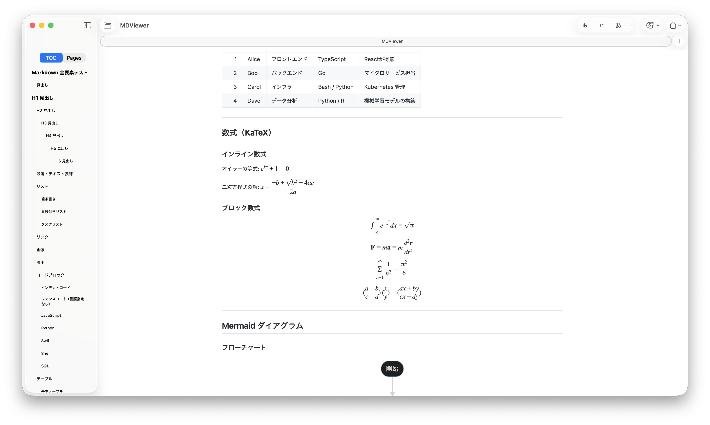

美しいレンダリング、即時プレビュー、目次サイドバー、シンタックスハイライト、 KaTeX 数式、Mermaid ダイアグラム、そして分割ビューエディタ — すべてネイティブ macOS アプリで。
macOS 14 Sonoma 以降が必要 · Apple Silicon 専用

ターミナルから Claude Code や Codex を使用した際に、.md ファイルを読むための軽量なビューアが欲しいというのが、開発のきっかけでした。
そのうち「やっぱり編集機能も欲しい」となり、v1.1 では分割ビューエディタを内蔵しました。左で編集、右でリアルタイムプレビュー。
機能
開発者、ライター、そして日々 Markdown ファイルを扱うすべての人のために設計されています。
Markdown ファイルを即座に開いて表示します。ファイルの変更を監視し、編集と同時にライブリロードします。
見出しから目次を自動生成。クリックするとスムーズスクロールで該当セクションへジャンプします。
サムネイルパネルで長い文書を一目で把握。任意のページに素早く移動できます。
Shiki による 27 言語のハイライトに対応。macOS の外観設定に連動したライト・ダークテーマ。
KaTeX によるインライン・ブロック LaTeX 数式を美しく表示。追加設定は不要です。
フローチャート、シーケンス図、ガントチャートなどをドキュメント内で直接レンダリングします。
ローカルの Markdown リンクはアプリ内で開き、外部リンクはブラウザで開きます。画像もディスクから読み込み。
スタイルと書式を保持したまま、ワンクリックで PDF に印刷・書き出しできます。
⌘E で分割ビューエディタに切り替え。左で編集、右でリアルタイムプレビュー。⌘S で保存。
Developer ID 署名と Apple 公証を取得済み。Gatekeeper に認められた安全なインストールが可能です。
始め方
Homebrew も設定も不要。ダウンロードしてすぐ使えます。
zip を解凍し、MDViewer.app を アプリケーション フォルダにドラッグします。
Markdown ファイルをダブルクリック、または Dock の MDViewer アイコンにドロップするだけです。
オープンソース
MDViewer は以下のオープンソースライブラリを使用しています。ライセンス全文はアプリバンドル内に同梱されています。
| ライブラリ | 使用目的 | ライセンス |
|---|---|---|
|
v12.0.2
|
Markdown テキストをパースして HTML に変換します。 | MIT |
|
v1.x
|
VS Code と同じ文法ファイルを使い、27 言語のシンタックスハイライトを提供します。CSS 変数によるライト・ダーク両テーマに対応。 | MIT |
|
v0.16.11
|
インライン $…$ およびブロック $$…$$ 形式の LaTeX 数式を高品質な HTML としてレンダリングします。 |
MIT |
|
v10.x
|
テキスト定義からフローチャート・シーケンス図・ガントチャートなどのダイアグラムをレンダリングします。 | MIT |